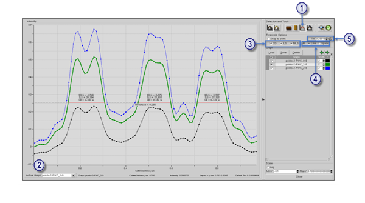
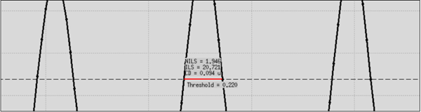

You can determine
the CD and threshold value at any point in a cutline graph displayed
in the Cutline tool.
Procedure
- Click the Mark Threshold and CD icon. See
the following figure.
Figure 1. Edit Cutline GUI
- Activate the graph you want to make measurements
on. You can change the active graph using the Active
Graph dropdown list below the plot.
- If unchecked, click the critical dimension check
button, CD. Optionally, click
the image log slope and normalized image log slope check buttons, ILS and NILS.
- Select whether to perform the computations on
the layout feature locations or the space between the layout feature
locations using the At: Line or At: Space radio buttons.
Note: At
this time, the RET Flow Tool only performs calculations at the center
of the graph, so selecting At: Line or At: Space has no effect.
- Click your
desired intensity threshold in the graph region of the Edit Cutline
window. If you need to be more accurate, you can input the threshold
value using the threshold box, Thr.
Tip You can reset the threshold
value to that specified by the PWC using the reset button to the
right of the threshold box.
Results
A threshold
line and CD markers are displayed. Figure 2 shows the
calculated CD (and ILS and NILS).
Figure 2. User-Defined Threshold and CD
The measurements are computed at the center of
the graph. No background transmission detection is performed.